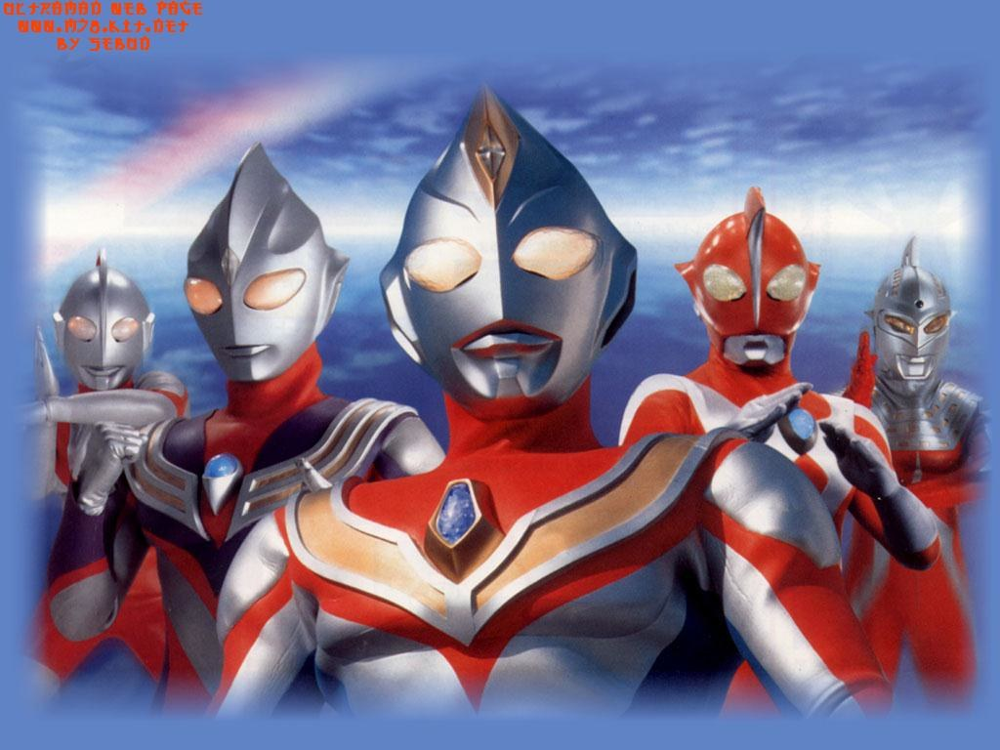
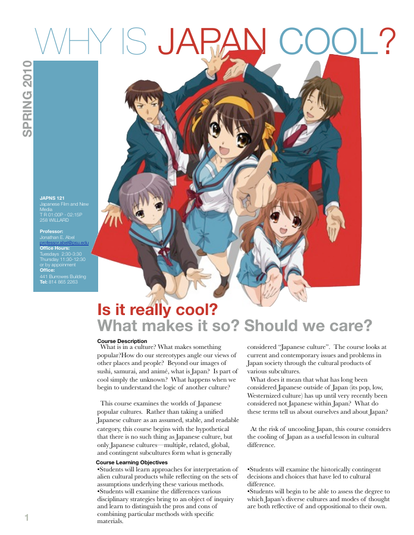

Schedule

Schedule
Tue, Jan 12, 2010
INTRO
WHAT IS CULTURE? WHAT IS POPULAR? WHAT IS JAPAN?
The Dangers of nihonjinron
Cooling the unknown.
Thu, Jan 14, 2010
OUR MEDIA STEREOTYPES: TECHNOLOGICAL, WEIRD, MILITARISTIC, CUTE, UNORIGINAL. COOL.
WHAT IS COOL JAPAN?
Structure of iki
Readings:
Douglas McGray, “Gross National Cool”
Anthony Faiola, “Japan's empire of cool: Culture becomes its biggest export”
Daniel Pink, “Japan Ink: The Manga-Industrial Complex”
NHK “Cool Japan” Website.
Japan National Tourism Organization. Cool Japan, Fusion with Tradition.
Mon, Jan 18, 2010-- MLK DAY -- OPTIONAL SCREENING
Platonic Sex
Tue, Jan 19, 2010
ENDS OF LIFE
Abortion, Mizuko,
Clips from Platonic Sex
Clips from Deep Love
Readings:
Japan Made in USA (Selections 18-19, 105-108)
Sheryl WuDunn, “In Japan, a Ritual of Mourning for Abortions,” NYT
Peggy Orenstein, “When the author's pregnancy ended in Japan, thousands of miles from home, she...” New York Times
Thu, Jan 21, 2010
Brain Death ...Clips from Organ
Readings
MORIOKA Masahiro, “Reconsidering Brain Death”
Margaret Lock, “Deadly Disputes”
Mon, Jan 25, 2010 -- OPTIONAL SCREENING
Gojira
Tue, Jan 26, 2010
ENDS OF THE WORLD
Readings:
William Tsutsui, “The Birth of Gojira”
B. Kushner “Gojira as Japan's First Postwar Media Event”
Gerow, “Wrestling with Godzilla: Intertextuality, Childish Spectatorship, and the National Body”
Thu, Jan 28, 2010
to Battle Royale and Death Note
MIYADAI Shinji’s notion of Homeostasis of the self
Readings:
Watch “Death Note”
Mon, Feb 1, 2010 -- OPTIONAL SCREENING
Pulse (Kairo)
Tue, Feb 2, 2010
J-HORROR, Ero-guro, Fears of mobility and circulation.
Readings:
Ranpo Reader selections
“Daydream”, “Appearance of Osei”, “Stalker in the Attic”, “Dr. Mera’s Mysterious Crimes”, “The Dancing Dwarf”
Thu, Feb 4, 2010
clips from The Ring, Parasite Eve
Readings:
More Ranpo
“The Horrors of Film”, “Spectral Voices”, “My Love for the Printed Word”, “Fingerprint Novels of the Meiji Era”
Mon, Feb 8, 2010 -- OPTIONAL SCREENING
Cosmetic Sales Competition (Minyo no tabi akita obako) 1963 starring Misora Hibari dir Watanabe Kunio
Tue, Feb 9, 2010
GENDER I
Shojo Culture from Setsuko Harada, Sazae-san, Misora Hibari, clips from NHK Morning Drama
and clips from Linda, Linda, Linda
Readings:
Amy Borovoy, The Too Good Wife (Selections)
IMAMURA Tahei, “Sazae-san and Blondie”
Alan Tansman, “Misora Hibari: the postwar myth of mournful tears and sake”
Paul Harvey, “Interpreting Oshin: war, history and women in modern Japan [popular television and drama produced by NHK in 1983-1984]”
Thu, Feb 11, 2010
to Lolita and Hello Kitty
Clips from Shomu-ni
Images from FRUITS
Readings:
Koizora translations [Translation one, Translation two]
Kinsella, “Cuties in Japan”
Deborah Shamoon, “Situating the shojo in shojo manga: teenage girls, romance comics, and contemporary Japanese culture”
Mon, Feb 15, 2010 -- OPTIONAL SCREENING
Truck Rascals
Tue, Feb 16, 2010
GENDER II
Taiyozoku, Yakuza, Yanki, Tora-san, Yujiro,
Mifune to Ishihara, Mishima to Asano
Clips from Godspeed You Black Emperor
Readings:
Ikuya SATO, Kamikaze Biker (Selections)
Greenfeld, “Tats: The Speed Tribes”
Thu, Feb 18, 2010
Make-up for boys,Bishōnen, ikemen, and charisma hairstylists
Readings:
Selections from Laura Miller Beauty Up
Doug Slaymaker, selections from The Body in Postwar Fiction
Bonus points for those who come to the screening of Sukiyaki Western Django at 7pm and sign in.
Mon, Feb 22, 2010 -- OPTIONAL SCREENING
Go-Con!
Tue, Feb 23, 2010
GENERATION-Z
Karyushakai, School, Education, Dating, Jobs
Readings:
Mark Schreiber, “Juvenile Crime in the 1990s”
Tony D. Guzewicz - “A New Generation of Homeless Hits Tokyo’s Streets”
Aoki Hideo – “The Urban Underclass and the Homeless”
Thu, Feb 25, 2010
Subsidized Dating (enjo kosai),
Hikkikomori
Clips Deep Love
Readings:
Yumiko Iida,”Between the Technique of Living an Endless Routine and the Madness of Absolute Degree Zero”
Nobue SUZUKI “Of love and the marriage market”
David Leheny, Think Global, Fear Local (Selections)
Mon, Mar 1, 2010 -- OPTIONAL SCREENING
Perfect Blue
Tue, Mar 2, 2010
OTAKU 1 Mis en abyme---The anime within the anime
Hyper-up Self Reference; The Structure of Moe; Azuma Hiroki
Readings:
Melancholy of Suzumiya Haruhi v.1
Watch Melancholy of Suzumiya Haruhi
Thu, Mar 4, 2010
EXAM 1
--------------------------------- SPRING BREAK ------------------------------
Mon, Mar 15, 2010 -- OPTIONAL SCREENING
Otaku in Love
Tue, Mar 16, 2010
OTAKU 2
Two explanations: Historical / Psychological
Postmodern Sexuality
Saito Tamaki
Clips Mamiya Brothers
Readings:
FAUST One: "Outlandos d'Amour," "xxxHOLiC: ANOTHERHOLiC," "F-sensei's Pocket," "Drill Hole in My Brain"
Thu, Mar 18, 2010
TECHNOLOGY/CONSUMERISM
Goods, Figures, Walkman, Cell Phone Cultures, One-seg
Clips Dawn of a New Day -the JVC Story
Readings:
Partner, selection from Assembled in Japan
Marilyn Ivy, “Formations of a Mass Culture”
“Consuming the Walkman”
Nanette Gottlieb and Mark McLelland, Japanese Cybercultures (Selections)
Mon, Mar 22, 2010 -- OPTIONAL SCREENING
Tampopo
Tue, Mar 23, 2010
FOOD
Competition Eating,Izakaya Cuisine, Clips from Udon,
Kikoman, Clips from Oishinbo
Readings:
Oishinbo
Thu, Mar 25, 2010
Clips from Colonel in Japan and Udon
Readings: Selections from Japanese Cuisine
Emiko Ohnuki-Tierney, “McDonald’s in Japan”
“Eating Out-At Home”
Lorie Brau, “Oishinbo’s Adventures in Eating”
Mon, Mar 29, 2010
Ultraman first 3 episodes
Tue, Mar 30, 2010
IDENTITY 1: POLITICS
ULTRANATIONALISM:
PRO-WRESTLING
Readings:
Tetsuya – “Japanese neo-nationalism: a critique of Katō Norihiro's "After the defeat" discourse”
Ukai Satoshi – “Reflections beyond the flag: Why is the Hinomaru flag "auspicious/foolish"?”
Linda Hoaglund, “Stubborn Legacies of War”
Thu, Apr 1, 2010
EXAM 2
Mon, Apr 5, 2010 -- OPTIONAL SCREENING
Rakugaki:Love Song for Rapper
Tue, Apr 6, 2010
IDENTITY 2: RACE ETHNICITY Foreigners, immigrants,
Readings:
“‘Sambo’ racism row reignites over kids’ play” Japan Times
John G. Russell, “Race and Reflexivity”
Thu, Apr 8, 2010
IDENTITY 3: CLASS Takiji Boom
Readings:
Heather Bowen Struyk “Why a Boom in Proletarian Literature in Japan? The Kobayashi Takiji Memorial and The Factory Ship”
Mon, Apr 12, 2010 -- OPTIONAL SCREENING
Family Game
Tue, Apr 13, 2010
FAMILY
Thu, Apr 15, 2010
FAMILY IN CRISIS
Clips Last Family, Survive Style +5, Crazy Family
Mon, Apr 19, 2010 --OPTIONAL SCREENING
Metropolis
Tue, Apr 20, 2010
THE POSTMODERN CITY, Clips from Akira, Tetsuo
Readings:
Hidenobu JINNAI – “Rhetoric of the modern city”
Andre Sorensen – “Implementing the new city planning system”
Paul Waley, “Re-scripting the city: Tokyo from ugly duckling to cool cat ”
Thu, Apr 22, 2010
OUT OF JAPAN GLOBAL COOL
Jpop in France, China, Korea, Taiwan, or Hong Kong.
Readings:
“The Birth of Cool:A new generation of trendsetters is laboring to turn 'Made in China' into a symbol of style that's part Western, part traditional and all original” Hannah Beech
Tue, Apr 27, 2010 FINAL EXAM REVIEW
Thu, Apr 29, 2010 FINAL EXAM REVIEW
FINAL EXAM
JAPNS121
001 Tuesday, May 4, 2010 2:30P-4:20P 101 ALTHOUSE
